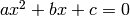
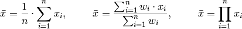
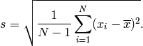
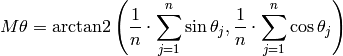
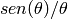

Arrays con Numpy¶
Los arrays son un tipo de dato similar a las listas, pero orientadas especialmente al cálculo numérico. En cierto modo se pueden considerar como vectores o matrices y son un tipo de dato fundamental para el cálculo con tipos de datos de estructurados (conjuntos de datos).
El inconveniente principal de las listas, que es el tipo básico de dato estructurado en Python es que no está pensado para el cálculo matemático; veámolo con un ejemplo:
In [1]: lista = range(5) # Lista de numeros de 0 a 4
In [2]: print(lista*2)
[0, 1, 2, 3, 4, 0, 1, 2, 3, 4]
In [3]: print(lista*2.5)
---------------------------------------------------------------------------
TypeError Traceback (most recent call last)
/home/japp/<ipython console> in <module>()
TypeError: can't multiply sequence by non-int of type 'float'
En el ejemplo anterior vemos cómo al multiplicar una lista por un número entero, el resultado es concatenar la lista, en lugar de multiplicar cada uno de sus elementos. Peor aún, al multiplicarlo por un número no entero da un error, al no poder crear una fracción de una lista. Esto se podría resolver iterando cada uno de los elementos de la lista con un bucle for:
In [4]: lista_nueva = [i*2.5 for i in lista]
In [5]: print(lista_nueva)
[0.0, 2.5, 5.0, 7.5, 10.0]
aunque esta técnica es ineficiente y lenta.
Cuando realmente queremos hacer cálculos con listas de números, debemos usar los arrays. El módulo numpy nos da acceso a los arrays y a una enorme cantidad de métodos y funciones aplicables a los arrays. Además, numpy incluye funciones matemáticas básicas similares al módulo math además de algunas utilidades de números aleatorios, ajuste lineal de funciones, etc.
Creando arrays¶
Primero debemos importar el módulo numpy en sí o bien todas sus funciones:
In [6]: import numpy # Cargar el modulo numpy, o bien
In [7]: import numpy as np # cargar el modulo numpy, llamándolo np, o bien
In [8]: from numpy import * # cargar todas funciones de numpy
Si cargamos el módulo solamente, accederemos a las funciones como numpy.array() o np.array(), según cómo importemos el módulo; si en lugar de eso importamos todas las funciones, accederemos a ellas directamente (e.g. array() ). Por comodidad usaremos por ahora esta última opción, aunque muy a menudo veremos que usa la notación np.array(), etc., especialmente cuando trabajamos con varios módulos distintos.
Un array se puede crear explícitamente o a partir de una lista.
In [9]: x = array([2.0, 4.6, 9.3, 1.2]) # Creacion de un array directamente
In [10]: notas = [ 9.8, 7.8, 9.9, 8.4, 6.7] # Crear un lista
In [11]: notas = array(notas) # y convertir la lista a array
Existen métodos para crear arrays automáticamente:
In [12]: numeros = arange(10.) # Array de numeros de 0 a 9
In [13]: print(numeros)
[ 0. 1. 2. 3. 4. 5. 6. 7. 8. 9.]
In [14]: lista_ceros = zeros(10) # Array de 10 ceros
In [15]: print(lista_ceros)
[ 0. 0. 0. 0. 0. 0. 0. 0. 0. 0.]
In [16]: lista_unos = ones(10) # Array de 10 unos
In [17]: print(lista_unos)
[ 1. 1. 1. 1. 1. 1. 1. 1. 1. 1.]
In [18]:otra_lista = linspace(0,30,8) # Array de 8 números, de 0 a 30
In [19]: print(otra_lista)
[ 0. 4.28571429 8.57142857 12.85714286 17.14285714
21.42857143 25.71428571 30. ]
Indexado de arrays¶
Los arrays se indexan prácticamente igual que las listas y las cadenas de texto:
In [18]: print(numeros[3:8]) # Elementos desde el tercero al septimo
[ 3. 4. 5. 6. 7.]
In [19]: print(numeros[:4]) # Elementos desde el primero al cuarto
[ 0. 1. 2. 3.]
In [20]: print(numeros[5:]) # Elementos desde el quinto al final
[ 5. 6. 7. 8. 9.]
In [21]: print(numeros[-3]) # El antepenúltimo elemento (devuelve un elemento, no un array)
7.
In [24]: print(numeros[:]) # Todo el array, equivalente a print(numeros)
[ 0. 1. 2. 3. 4. 5. 6. 7. 8. 9.]
In [25]: print(numeros[2:8:2]) # Elementos del segundo al septimo, pero saltando de dos en dos
[ 2. 4. 6.]
Algunas propiedades de los arrays¶
Al igual que las listas, podemos ver el tamaño de un array unidimensional con len(), aunque la manera correcta de conocer la forma de un array es usando el método shape:
In [28]: print(len(numeros))
10
In [29]: print(numeros.shape)
(10,)
Nótese que el resultado del método shape es una tupla, en este caso con un solo elemento ya que el array “numeros” es unidimensional.
Si creamos un array con arange usando un número entero, el array que se creará será de enteros. Es posible cambiar todo el array a otro tipo de dato (como a float) usando el método astype():
In [31]: enteros = arange(6)
In [32]: print(enteros)
[0 1 2 3 4 5]
In [33]: type(enteros)
Out[33]: <type 'numpy.ndarray'>
In [34]: type(enteros[0])
Out[34]: <type 'numpy.int32'>
In [35]: decimales = enteros.astype('float')
In [36]: type(decimales)
Out[36]: <type 'numpy.ndarray'>
In [37]: type(decimales[0])
Out[37]: <type 'numpy.float64'>
In [38]: print(decimales)
[ 0. 1. 2. 3. 4. 5.]
In [38]: print(decimales.shape) # Forma o tamaño del array
(6, )
Operaciones con arrays¶
Los arrays permiten hacer operaciones aritméticas básicas entre ellos:
In [39]: x = array([5.6, 7.3, 7.7, 2.3, 4.2, 9.2])
In [40]: print(x+decimales)
[ 5.6 8.3 9.7 5.3 8.2 14.2]
In [41]: print(x*decimales)
[ 0. 7.3 15.4 6.9 16.8 46. ]
In [42]: print(x/decimales)
[ Inf 7.3 3.85 0.76666667 1.05 1.84 ]
Los operaciones se hacen elemento a elemento, por lo que ambas deben tener la misma forma (shape). Fíjate que en la división el resultado del primer elemento es indefinido (inf) debido a la división por cero.
Varios arrays se pueden unir con el método concatenate, que también se puede usar para añadir elementos nuevos:
In [44]: z = concatenate((x, decimales))
In [45]: print(z)
[ 5.6 7.3 7.7 2.3 4.2 9.2 0. 1. 2. 3. 4. 5. ]
In [46]: z = concatenate((x,[7]))
In [47]: print(z)
[ 5.6 7.3 7.7 2.3 4.2 9.2 7. ]
es importante fijarse que los de arrays o listas a unir debe darse como una tupla y de ahí los elementos entre paréntesis como (x,[7]) o (x,[2,4,7]) o (x,array([2,4,7])).
Además las operaciones aritméticas básicas, los arrays de numpy tienen métodos o funciones específicas para ellas más avanzadas. Algunas de ellas son las siguientes:
In [5]: z.max() # Valor máximo en el array
Out[5]: 9.1999999999999993
In [6]: z.min() # Valor mínimo en el array
Out[6]: 2.2999999999999998
In [7]: z.mean() # Valor medio
Out[7]: 6.1857142857142851
In [8]: z.std() # Desviación típica
Out[8]: 2.1603098795103919
In [9]: z.sum() # Suma de todos los elementos
Out[9]: 43.299999999999997
In [16]: median(z) # Mediana
Out[16]: 7.0
Los métodos, que se operan se manera z.sum() también pueden usarse como funciones de tipo sum(z), etc. Consulta el manual de numpy para conocer otras propiedades y métodos de los arrays.
Una gran utilidad es la posibilidad de usar arrays con datos booleanos (True o False) y operar entre ellos o con arrays con números. Veamos algunos ejemplos:
In [19]: A = array([True, False, True]) In [20]: B = array([False, False, True]) In [22]: A*B Out[22]: array([False, False, True], dtype=bool) In [29]: C = array([1, 2, 3]) In [30]: A*C Out[30]: array([1, 0, 3]) In [31]: B*C Out[31]: array([0, 0, 3])
En este ejemplo vemos cómo al multiplicar dos arrays booleanos es resultado es otro array booleano con el resultado que corresponda, pero al multiplicar booleanos con arrays numéricos, el resultado es un array numérico con los mismos elementos, pero con los elementos que fueron multiplicados por False iguales a cero.
Tambíén es posible usar los arrays como índices de otro array y como índices se pueden usar arrays numéricos o booleanos. El resultado será en este caso un array con los elementos que se indique en el array de índices numérico o los elementos correspondientes a True en caso de usar un array de índices booleano. Veámoslo con un ejemplo:
# Array con enteros de 0 a 9 In [37]: mi_array = arange(0,100,10) # Array de índices numericos con numeros de 0 9 de 2 en 2 In [38]: indices1 = arange(0,10,2) # Array de índices booleanos In [39]: indices2 = array([False, True, True, False, False, True, False, False, True, True]) In [40]: print(mi_array) [ 0 10 20 30 40 50 60 70 80 90] In [43]: print(mi_array[indices1]) [ 0 20 40 60 80] In [44]: print(mi_array[indices2]) [10 20 50 80 90]
También es muy sencillo crear arrays booleanos usando operadores lógicos y luego usalos como índices, por ejemplo:
# Creo un array usando un operador booleano In [50]: mayores50 = mi_array > 50 In [51]: print(mayores50) [False False False False False False True True True True] # Lo utilizo como índices para seleccionar los que cumplen esa condición In [52]: print(mi_array[mayores50]) [60 70 80 90]
Arrays multidimensionales¶
Hasta ahora sólo hemos trabajado con arrays con una sola dimensión, pero numpy permite trabajar con más dimensiones. Un array de dos dimensiones podría ser por ejemplo un sistema de ecuaciones o una imagen. Para crearlos es posible hacerlo declarándolos directamente o mediante funciones como zero() o ones()** dando como parámetro una tupla con la forma del array o también usando arange() y crear un array unidimensional y luego cambiar su forma. Veamos estos ejemplos:
# Array de 3 filas y tres columnas, creado implícitamente In [56]: arr0 = array([[10,20,30],[9, 99, 999],[0, 2, 3]]) In [57]: print(arr0) [[ 10 20 30] [ 9 99 999] [ 0 2 3]] # Array de ceros con 2 filas y 3 columnas In [57]: arr1 = zeros((2,3)) In [59]: print(arr1) [[ 0. 0. 0.] [ 0. 0. 0.]] # Array de unos con 4 filas y una columna In [62]: arr2 = ones((4,1)) In [63]: print(arr2) [[ 1.] [ 1.] [ 1.] [ 1.]] # Array unidimensional de 9 elementos y cambio # su forma a 3x3 In [64]: arr3 = arange(9).reshape((3,3)) In [65]: print(arr3) [[0 1 2] [3 4 5] [6 7 8]] In [69]: arr2.shape Out[69]: (4, 1)
Como vemos en la última línea, la forma (shape) de los arrays se sigue dando como una tupla, con la dimensión de cada eje separado por comas; en ese caso la primera dimensión son las cuatro filas y la segunda dimensión o eje es una columna. Es por eso que al usar las funciones zero(), ones(), reshape(), etc. hay que asegurarse que el parámetro de entrada es una tupla con la longitud de cada eje. Cuando usamos la función len() en un array bidimensional, el resultado es la longitud del primer eje o dimensión, es decir, len(arr2) es 4.
El acceso a los elementos es el habitual, pero ahora hay que tener en cuenta el eje al que nos referimos, usando ”:” como comodín para referirnos a todo el eje. Por ejemplo:
# Primer elemento de la primera fila y primera columna (0,0) In [86]: arr0[0,0] Out[86]: 10 # Primera columna In [87]: arr0[:,0] Out[87]: array([10, 9, 0]) # Primera fila In [88]: arr0[0,:] Out[88]: array([10, 20, 30]) # Elementos 0 y 1 de la primera fila In [89]: arr0[0,:2] Out[89]: array([10, 20])
Igualmente podemos manipular un arrays bidimensional usando sus índices:
# Asigno el primer elemento a 88 In [91]: arr0[0,0] = 88 # Asigno elementos 0 y 1 de la segunda fila In [92]: arr0[1,:2] = [50,60] # Multiplico por 10 la última fila In [93]: arr0[-1,:] = arr0[-1,:]*10 In [94]: print(arr0) array([[ 88, 20, 30], [ 50, 60, 999], [ 0, 20, 30]])
Ejercicios¶
Crear un programa que resuelva la ecuación de segundo grado  para cualquier valor de a, b y c comprobando el valor del descriminante
 .
.La media aritmética, pesada y geométrica de una serie de números se definen respectivamente como

Calcular estos valores para la lista de números 34.4, 30.1, 29.8, 33.5, 30.9, 31.1 y pesos 0.9, 0.79, 0.84, 0.6, 0.88, 0.78.
Cree un programa que calcule la desviación estándar de los números en un array, es decir, calcular:

Usando la función randint de numpy.random, genere una lista de 30 números enteros. Calcule la media y desviación estándar entre grupos de 5 en 5 poniendo los resultados en arrays, es decir, obtener un array con las medias y otro con las desviaciones estándar, que serán de longtud 30/5. Crear un fichero con tres columnas que contenga el número de línea, la media y la desviación estándar.
La función arctan2 del módulo math o de numpy permite calcular el arcotangente de (y,x) medido en radianes, lo que permite mantener la información sobre los cuadrantes. El valor medio de n ángulos se puede realizar con la siguente ecuación:

Calcule el valor medio de los ángulos 12.3, 10.1, 11.9, 12.4, 10.4 y 10.9.
Calcule en un array los valores que toma la función seno cociente  para valores de
 entre -45º y 45º a intervalos de 0.1º. Escriba el resultado en un fichero que incluya en una columna el ángulo en grados y en otra el valor de seno cociente correspondiente.
entre -45º y 45º a intervalos de 0.1º. Escriba el resultado en un fichero que incluya en una columna el ángulo en grados y en otra el valor de seno cociente correspondiente.Para el cálculo de la letra del DNI se calcula el módulo 23 del número, es decir, la división entera del número del DNI entre 23. El resultado será siempre un valor entre 0 y 22 y cada uno de ellos tiene asignado una letra según la siguiente tabla:
0 1 2 3 4 5 6 7 8 9 10 11 12 13 14 15 16 17 18 19 20 21 22
T R W A G M Y F P D X B N J Z S Q V H L C K E
Escriba un programa que calcule letra de cualquier DNI. El programa debe comprobar que la entrada tiene ocho dígitos.
Calcule todos los números inferiores a 500 que son multiplos de 5 y 7.
Se llama sucesión de Fibonacci a la colección de n números para la que el primer elemento es cero, el segundo 1 y el resto es la suma de los dos anteriores. Por ejemplo, la sucesión para n=5 es (0, 1, 1, 2, 3). Crear un programa que calcule la lista de números para cualquier n.